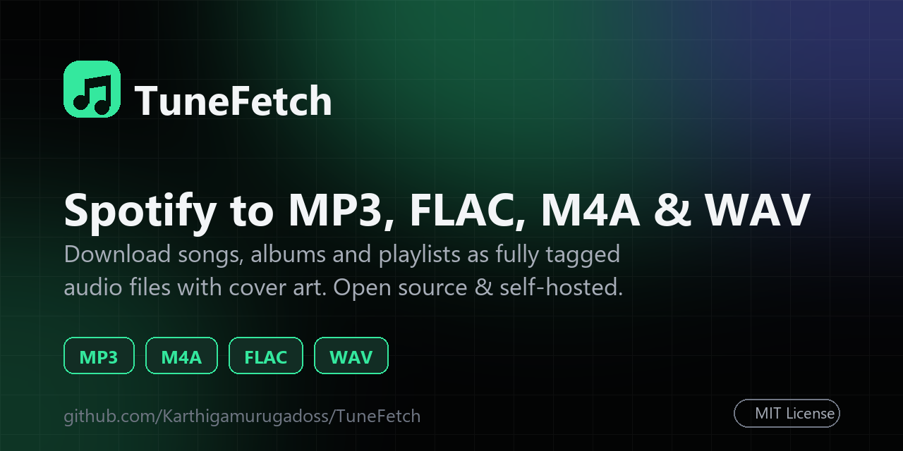

Free Spotify downloader.
Tagged music out.
TuneFetch converts Spotify songs, albums and playlists to MP3, FLAC, M4A or WAV with title, artist, track number and cover art already embedded. No account, no Premium, no API keys.

A Spotify song, album and playlist downloader that does it properly.
Songs, albums, playlists
Paste any Spotify track, album or playlist link, or queue many at once in Bulk mode.
Tagged with cover art
Title, artist, track number and album artwork are embedded in every file, so your library looks right.
MP3, M4A, FLAC, WAV
Choose the format and a 128 to 320 kbps bitrate for MP3 and M4A.
Pick your tracks
Preview a playlist or album and untick the songs you don't want before downloading.
Fast and parallel
Three tracks download at once with live progress, and a one-click ZIP for whole albums.
Cancel and retry
Stop any time and retry only the tracks that failed. No starting over.
Spotify to MP3, FLAC, M4A or WAV.
Up and running in two minutes.
Requires Python 3.10 or newer. Full instructions are in the README.
Good to know.
Can I download a Spotify playlist as MP3?
Yes. Paste the playlist link into TuneFetch, choose MP3 and a bitrate, and download the tracks individually or as a single ZIP file.
Do I need Spotify Premium or an API key?
No. TuneFetch only reads the public information of a Spotify link. It does not log in to Spotify and needs no developer credentials.
Is TuneFetch free and open source?
Yes. It is free and released under the MIT license. The code is on GitHub.
Where does the audio come from?
TuneFetch reads track details from Spotify and finds the best matching audio on YouTube Music by title and duration. It does not download audio from Spotify itself.
Which formats does TuneFetch support?
MP3 and M4A at 128, 192, 256 or 320 kbps, plus FLAC and WAV. Title, artist, track number and cover art are embedded in every format.